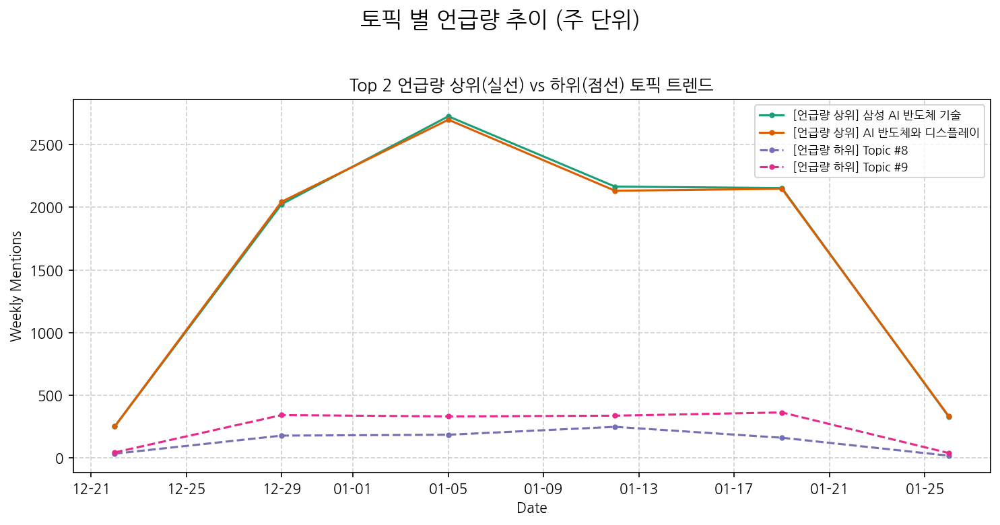
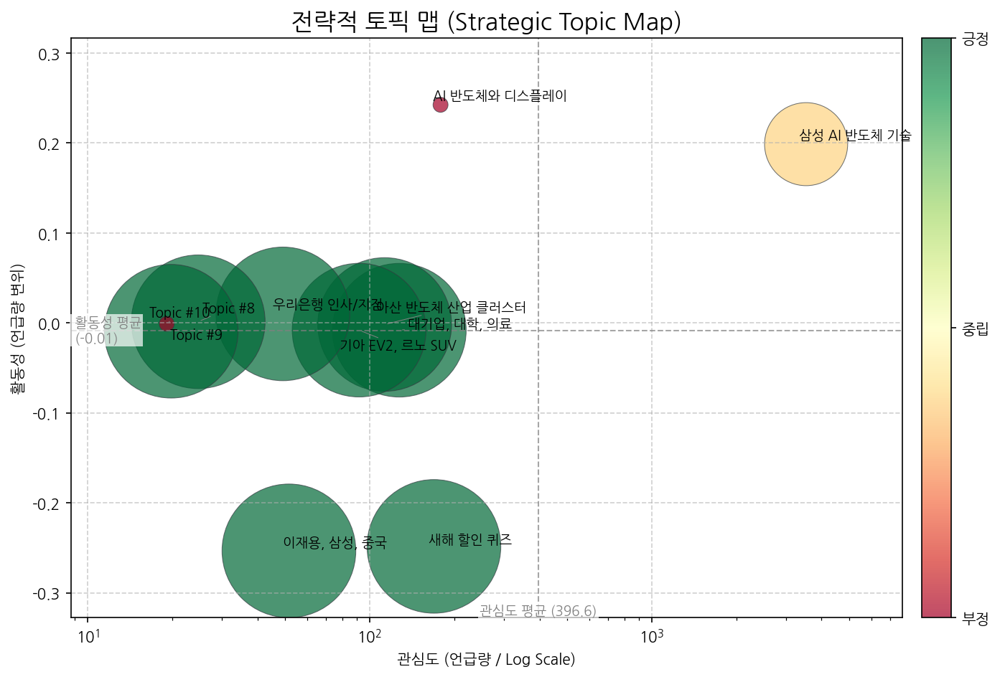
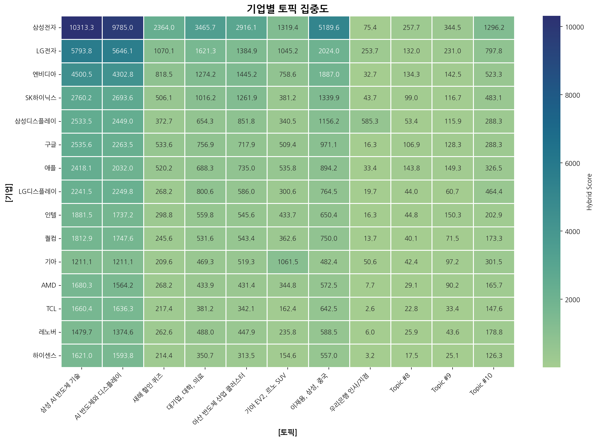
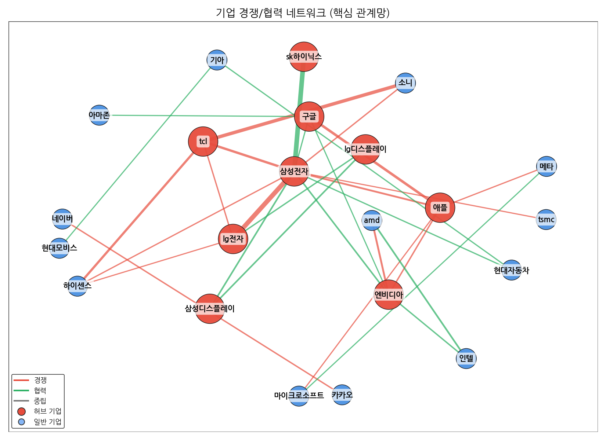
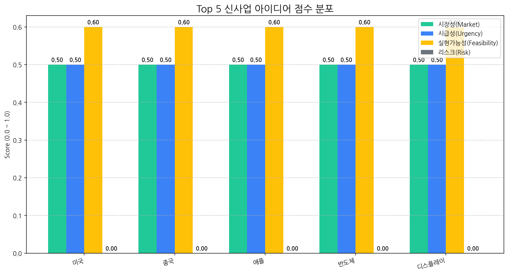

AI 분석 실패 (API 요청 한도 초과)
AI 분석 실패 (API 요청 한도 초과)

| 토픽 | 요약 | 핵심 키워드 |
|---|---|---|
| 삼성 AI 반도체 기술 | 삼성전자가 CES에서 공개한 AI 기반 반도체, TV, 스마트폰, 로봇 등 혁신 기술과 미래 디스플레이 시장 전략을 중심으로 설명합니다. | ai, 반도체, ces |
| AI 반도체와 디스플레이 | AI 기술 발전과 함께 OLED, 반도체, 디스플레이, 로봇, 자동차 등 다양한 분야에서 핵심 기술과 신제품 개발 동향을 다룹니다. 특히 삼성전자, LG 등의 기업들이 CES 2026을 앞두고 차세대 기술 및 사업 경쟁을 벌이고 있습니다. | ai, oled, 반도체 |
| 새해 할인 퀴즈 | 새해를 맞아 삼성전자 비건 상품의 할인 혜택과 관련된 퀴즈를 통해 구매 정보를 제공합니다. | 할인, 정답은, 문제는 |
| 대기업, 대학, 의료 | 대기업이 대학과 협력하여 계약학과를 통한 교육 운영, 위탁급식 사업, 의료 솔루션 제공 등 다양한 방면에서 사업을 확장하고 있으며, 환자 치료 및 관련 산업 발전에 기여하는 내용을 다룹니다. | 수업, 명장, 대기업 |
| 아산 반도체 산업 클러스터 | 아산시는 반도체 산업을 중심으로 한 대규모 국가산업단지 조성을 통해 지역 경제 활성화와 첨단 기술 발전을 도모하고 있으며, 충남 지역의 인구 증가와 문화, 재생에너지 인프라 구축에도 기여하고 있습니다. | 아산시, 인구, 지역 |
| 기아 EV2, 르노 SUV | 기아의 새로운 전기차 EV2 모델과 르노의 SUV 차량에 대한 내용입니다. 충전, 실내 기능, 인포테인먼트 시스템 등 차량의 전반적인 특징과 함께 KG Mobility (구 쌍용)의 무쏘 GT 모델 등도 언급됩니다. | 주행, 기아, 기아는 |
| 이재용, 삼성, 중국 | 이재용 삼성전자 회장이 중국 방문을 통해 경제 및 공급망 협력, AI 기술 교류 등 다양한 경제 경영 현안을 논의하는 내용을 다룹니다. | 중국, 한중, 사장 |
| 우리은행 인사/지점 | 우리은행의 지점장, 부장 등 인사 이동과 대구, 잠실, 청주, 부산, 송도, 판교, 화성, 대전, 속초, 원주, 김해 등 전국 각지의 지점 및 금융센터 관련 소식을 다룹니다. 김주현, 김태수, 김민철, 김민성, 김주영, 김현정 등 인물도 함께 언급됩니다. | two, 지점장, 부장 |
| Topic #8 | (LLM 해석 실패) | 김경, 경찰은, 강선우 |
| Topic #9 | (LLM 해석 실패) | 보조배터리, 기내, 보조배터리를 |
| Topic #10 | (LLM 해석 실패) | tiger, etf, tiger 현대차그룹플러스 |

해당 토픽: AI 분석 실패
권고 전략: AI 권고 생성 실패
해당 토픽: AI 분석 실패
권고 전략: AI 권고 생성 실패
해당 토픽: AI 분석 실패
권고 전략: AI 권고 생성 실패
해당 토픽: AI 분석 실패
권고 전략: AI 권고 생성 실패
AI 분석 실패 (API 요청 한도 초과)


| 관계 | 유형 | 강도(언급빈도) | 주요 연관 근거 |
|---|---|---|---|
| sk하이닉스 ↔ 삼성전자 | partnership | 1232 | [전자·전기 결산②] 'AI 반도체'만 웃다가 메모리까지 '슈퍼 사이클' 돌... 조용히 커온 로봇 강자... 반도체 공정 깊숙이 파고든 라온테크의 저력 [글로벌] PC업계, 메모리 쇼크에 전략 전면 수정..."가격·라인업·출하... |
| lg전자 ↔ 삼성전자 | rivalry | 966 | 삼성·LG, 게이밍 모니터 대전…프리미엄 모니터 공략 박차 [CES 2026]CES서 다시 붙은 삼성·LG…초대형 vs 초슬림 TV 전쟁 백기 든 日…'소니' 이름 단 중국 TV 나온다 |
| tcl ↔ 소니 | rivalry | 538 | 백기 든 日…'소니' 이름 단 중국 TV 나온다 'TCL-소니' 동맹에 TV 시장 지각변동…삼성·LG 입지 위협할까 미국 AI 유니콘 독주 속 한국은 2년간 2곳뿐 [CEO 뉴스] |
| amd ↔ 인텔 | partnership | 208 | 2나노 전쟁 점화···TSMC '독주 균열'에 삼성전자 '공급망 기회' 글로벌 빅테크 거물들, 새해 벽두 'CES 2026' 총출동 CES 2026 개막,글로벌 빅테크 CEO 총출동...미래 AI 로드맵 쏟아낸다 |
| 마이크로소프트 ↔ 엔비디아 | neutral | 87 | 빅테크 독주에 액티브 펀드 1조달러 이탈…11년째 자금유출 XRP 100달러 돌파, 비트코인 시총 '11조 달러' 돌파가 먼저? “S&P 500 거품 걷힌다”… 2026년 승부수는 ‘40% 할인’ 알짜주 7선 |
AI 분석 실패 또는 특이사항 없음.
[]
전략적 리스크 관리 부재는 시장 변화 대응 능력 저하 및 잠재적 기회 상실로 이어져, 디스플레이 산업 내 기업 경쟁력 약화의 주요 원인이 될 수 있습니다.
(감지된 주요 리스크 시그널 없음)
대상: AI 분석 중...
전략: AI 분석 중...
대상: AI 분석 중...
전략: AI 분석 중...
대상: AI 분석 중...
전략: AI 분석 중...
대상: AI 분석 중...
전략: AI 분석 중...
AI 분석 실패 (API 요청 한도 초과)
AI 분석 실패 (API 요청 한도 초과)
| idea | value_prop | score | target_customer |
|---|---|---|---|
| 미국 | 미국 도입으로 비용/품질/경험을 개선. | 0.0 | 기업(B2B) |
| 중국 | 중국 도입으로 비용/품질/경험을 개선. | 0.0 | 기업(B2B) |
| 애플 | 애플 도입으로 비용/품질/경험을 개선. | 0.0 | 기업(B2B) |
| 반도체 | 반도체 도입으로 비용/품질/경험을 개선. | 0.0 | 기업(B2B) |
| 디스플레이 | 디스플레이 도입으로 비용/품질/경험을 개선. | 0.0 | 기업(B2B) |

(데이터 없음)